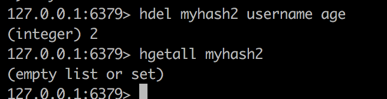
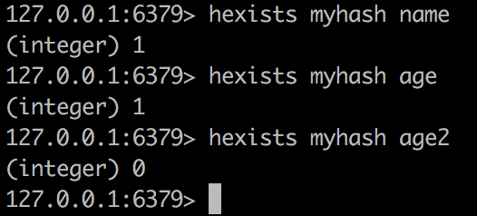
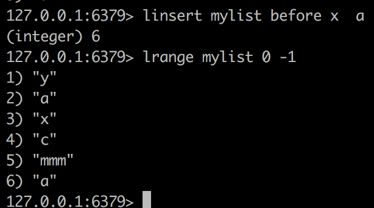
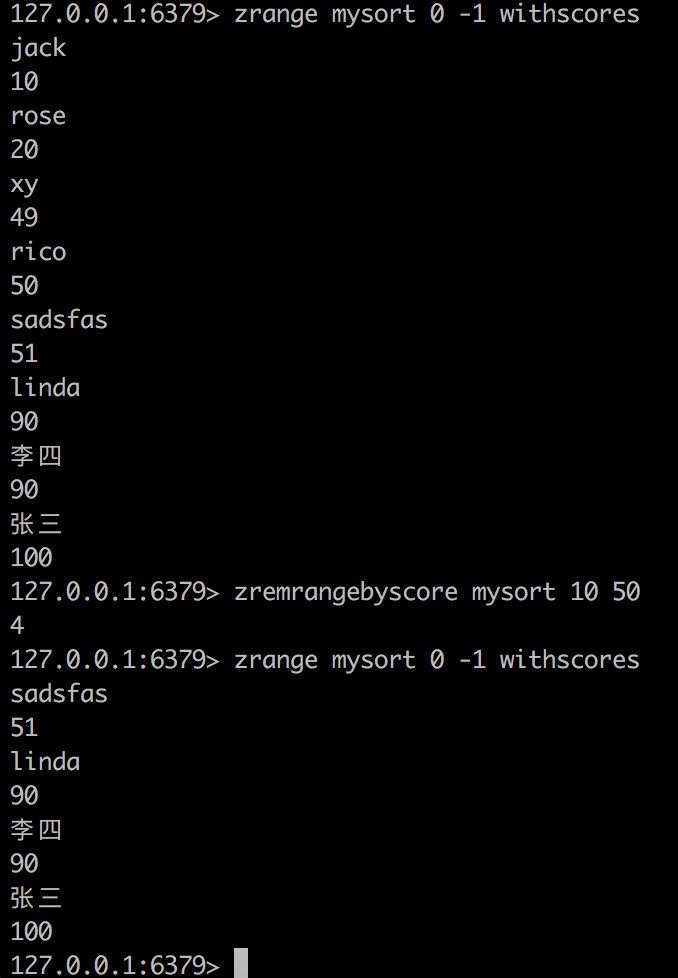

Redis入门
NoSQL概述
NoSQL=Not Only SQL
非关系型数据库
为什么需要NoSQL ?
High performance 高并发读写
Huge Storage 海量数据的高效率存储和访问
High Scalaility & HighAvaliablity 高可扩展性和高可用性


键值存储： Redis 优点： 快速查询 缺点：存储的数据缺少结构化
列存储： HBase ，优点：查找速度快，扩展性强 ，缺点：功能相对局限
文档数据库： MogoDB:
图形数据库： infoGrid
NoSQL的特点
数据之间没有关系

Redis概述
Redis的安装和使用
上Reids官网 https://redis.io/download 下载
官网上有安装说明
make

make完之后要进行安装
make PREFIX=/usr/local/redis install //指定路径
然后在local/usr/redis里面就有redis的文件了

redis-benchmark是性能测试的工具
redis-check-aof 是aof文件修复工具
redis-check-rdb 是rdb文件检查工具
redis-cli是命令行的客户端
redis-server 启动的客户端
拷贝配置文件
将redis的安装包里的redis.conf拷贝到/usr/local/redis目录下
启动 redis-server
这种启动属于前端启动，启动起来之后我们就不能进行操作了
我们一般采用后端启动方式
修改配置文件
找到daemonize no这一行，将no改为yes
保存后退出
然后运行下面的命令

意思是使用redis.conf配置文件里的配置来启动redis
使用命令ps -ef | grep -i redis
查看redis是否运行及其端口
redis的默认端口是6379
关闭Redis
第一种方式 kill -9 5318但这种方式不建议使用
第二种方式 ./bin/redis-cli shutdown 推荐使用这种方式
再ps看下没有了


set name imooc name是key imooc是值
get name 获取key为name的值
keys * 获取所有key
del name 删除key为name的值 和key一起删除
Jedis入门
Jedis是Redis官方首选的Java客户端开发包
要使其他ip的程序访问redis，需要在redis.conf中修改一下配置
把bind 这一行注释掉
protected-mode yes 改为no
bind 127.0.0.1将只允许本机连接
protected为yes 会报
DENIED Redis is running in protected mode because protected mode is enabled, no bind address was specified, no authentication password is requested to clients. In this mode connections are only accepted from the loopback interface. If you want to connect..
这个错
@Test
public void demo1(){
Jedis j1=new Jedis("192.168.0.108",6379);//ip 端口号
j1.set("name","rico");
String name=j1.get("name");
System.out.println(name);
j1.close();
}
使用连接池
Redis的数据结构
Redis数据结构之String
五种数据类型
- 字符串 (常用)
- 字符串列表 (常用)
- 有序字符串集合
- 哈希
- 字符串集合
Key定义的注意点
- 不要过长 (会消耗资源，还会降低查找效率)，最长1024个字节
- 不要过短
- 统一的命名规范
存储String
字符串类型的value最多可以容纳512M
常用命令
- 赋值
- 删除
- 扩展
- 取值
- 数值增减
127.0.0.1:6379> get name
"rico"
127.0.0.1:6379> getset name chj
"rico"
127.0.0.1:6379> get name
"chj"
127.0.0.1:6379>
127.0.0.1:6379> del name
(integer) 1
127.0.0.1:6379> get name
(nil)
127.0.0.1:6379> incr age
(integer) 28
127.0.0.1:6379> set name rico
OK
127.0.0.1:6379> incr name
(error) ERR value is not an integer or out of range
27.0.0.1:6379> decr age
(integer) 27
127.0.0.1:6379> incrby age 3
(integer) 30
127.0.0.1:6379> decrby age 5
(integer) 25
127.0.0.1:6379> decrby age2 5
(integer) -5 //age2不存在，默认0 ， 0-5就是-5
27.0.0.1:6379> append age 5
(integer) 3
127.0.0.1:6379> get age
"255"
127.0.0.1:6379> append age2 5 //append一个不存在的，会创建一个空的，然后后面追加
(integer) 1
127.0.0.1:6379> get age2
"5"
getset是先获取再重新赋值
获取一个不存在的返回nil
incr表示增加1 如果这个key不存在，这默认设为0并加1 即为1
如果不是int型 会报错 ERR value is not an integer or out of range
decr 会递减1 如果不存在则是0-1即为-1
incrby 可以指定加多少而不是1 同样如果不存在则为0然后加
decrby 可以指定减少多少
append表示在后面追加 返回值时长度，并不是值
Redis数据结构之哈希
String Key和String Value的map容器
每一个Hash可以存储4294967295个键值对
存储Hash的常用命令
hset 名字 key valuehmset 名字 key value key value 可以设置多个hget 名字 keyhmget 名字 key1 key2hgetall 名字 显示全部
hdel 名字 key1 key1 可以删除多个
继续删除返回0，表示字段不存在
del 名字 删除整个集合
删除后再去查找会显示nil
支持数字增加
例如hincrby myhash age 5 增加5
但是不支持自增1 hincr是不支持的
hexists 名字 key 判断是否有这个key的值 如果有返回1 如果没有返回 0

hgetall 名字可以得到所有属性和值
hlen 名字 有多少键值对
hkeys 名字 可以得到所有的key
hvalues 名字 可以得到所有的value
Redis的数据结构之 –List
在Redis中，list是按照插入顺序排序的 ，可以在头部和尾部添加元素，
在链表的两边插入数据效率较高，在链表的中间插入数据，效率较低
- ArrayList使用数组方式 所以根据索引来查找数据是非常快的，但是新增和删除的时候涉及到位移的操作效率慢
- LinkedList双向链表的方式 每个元素都记录了前后元素的指针，插入和删除的时候只是改变了前后元素的指针，所以速度快
两端添加
查看列表
两端弹出
获取列表
lpush mylist a b c lpush 表示在左边添加 a b c顺序进入，c在最左侧 如果名字之前没有则会新建，如果有就会继续增加
图中第二次lpush已经有了，所以变成添加了
rpush mylist2 a b crpush表示在右边添加 a b c 顺序进入，a在最左侧

查看 list lrange mylist 0 5 0表示开始 5表示结束 可以是负值，表示倒数第几个
0到-1 相当于从头到尾
左端弹出
lpopup 名字
右端弹出
llen mylist 获取list长度
llen 一个没有的 会返回0
lpushx mylist z 会在头部插入一个值 但是当mylsit不存在的时候就不会新建然后插入
同理还有rpushx mylist y
移除元素lrem 名字 个数 值 意思是删除多少个值为多少的值 rem是remove的缩写
如果个数大于0 就会从头向尾遍历删除
如果个数小于0 就会从后面向前遍历删除
删除了尾部的b
lset mylist 3 x 设置角标为3的值

linsert mylist before x a意思是在mylist中，在第一个出现x的地方的前面插入a

之后插入
把 mylist的尾部压出加入到mylist2的头部

这个功能主要用于消费者备份
Redis的数据结构之Set
和List类型不同，Set集合中不允许出现重复元素
添加删除元素
获得集合中的元素
集合中的差集
集合中的交集运算
集合中的并集运算
扩展命令
sadd 名字 值1 值2 值3 ...
如果之前有这个值，继续添加会返回0 表示添加不进去
smembers 名字 查看这个set里面的所有值
srem是用于删除的
sismember是用于判断某个值是否是成员 1表示true 0表示false
sdiff 求差集
sinter 求交集
sunion 求并集(重复元素去掉)
scard 总共有多少个
srandmember 名字 随机返回set里面的成员
sdiffstore 要存储到的名字 名字1 名字2 将名字1 和名字2中相差的常用存储到第一个参数里面去
sinterstore 交集存储到新的set里面去sunionstore 并集存储到新的set里面去
Redis数据结构之Sorted-Set
Sorted-Set 和 Set 都是字符串的集合 都不允许重复的内容出现在set中
Sorted-Set和Set的区别
Sorted-Set的每一个值都有一个分数与其关联
Sorted-Set中的成员在集合中的位置是有序的
zadd 名字 分数1 值1 分数2 值2 ..
如果之前有这个值，仍然往里面添加，会覆盖这个值，并且返回0
获得分数 zscore
获得数量 zcard
删除 zrem
范围查找 zrange mysort 0 -1 -1表示最后一个range mysort 0 -1 withscores 表示同时显示分数 默认是分数由小到大排序的
zrevrange mysort 0 -1 withscores 按分数从大到小 排序zremrangebyrank mysort 0 4 按照排名删除 0到4个，即5个
zremrangebyscore mysort 起始分数(包含) 终止分数(包含) 按照分数范围删除

返回分数区间的成员，并按照从低到高进行排序
只显示2个
zrevrangebyscore 逆序按分数排列 注意分数区间也要倒着写

zincrby mysort 6 赵六 为赵六增加6分
zcount 统计分数段内有多少个
使用场景 游戏排名 构建索引数据
Keys的通用操作

keys *列出所有keyskyes my* 列出所有my开头的keys 教程上是？号

del 多个key 可以删除
exists可以判断某个key是否存在 存在返回1 不存在返回0
127.0.0.1:6379> exists mylist2
0
127.0.0.1:6379> exists myset
1
rename 名字 新名字 注意这里改的是名字而不是值

设置过期时间 超过过期时间就获取不到了 如果某个key没有设置过期时间，会返回-1 如果已经过期，返回-2
type命令返回指定key的类型 没有这个key返回none
127.0.0.1:6379> type age
string
127.0.0.1:6379> type myset
set
127.0.0.1:6379> type mylist
list
127.0.0.1:6379> type mysort
zset
redis的特性
- 多数据看
- 支持事务
一个redis最多可提供16个数据库 分别是0到15 客户端默认连接的是0
select 1 可以选择1号数据库move key 可以将某个key移到某个数据库
用这三个命令来实现事务 multi exec discard
事务中所有命令都将被串行化顺序执行 执行事务期间，redis不会再为其他客户端执行任务 ， 从而保证事务中的命令都被原子化执行，
事务中如果某个命令执行失败，剩下的还是会被执行，
使用multi来开启事务
multi后面的命令都被视作事务的相关操作
exec相当于提交 commit
discard相当于回滚
在事务开启之前，如果客户端和服务器之间出现网络错误，那么所执行的语句都将不会被服务器提交
如果网络断开是发生在执行之后的，那么这个事务中的所有命令都会被服务器执行
multi表示开启事务，它后面执行的命令都会被存到命令的队列当中
如图所示，当在执行事务的时候，get age仍然是255，没有变
一旦执行完成之后，就变了


回滚

discard 回滚，回滚了就不需要再exec了
Redis持久化
两种持久化方式
- RDB方式
- AOF方式
- 无持久化
- 同时使用RDB和AOF
RDB 指定的时间间隔将数据写入到磁盘中
AOF 以日志形式记录每一次操作
RDB方式
默认使用RDB方式
优势:
整个redis数据库将只包含一个文件,方便备份
对于恢复而言，RDB是一个非常不错的选择
性能最大化
劣势
举例，每30秒写一次，结果25秒的时候宕机了 前25秒数据就丢失了
子进程来完成数据持久化操作的，如果数据集大的时候，可能会导致整个服务器需要停止一段时间
配置:
默认配置
意思是每900秒(15分钟)至少有一个key发生变化就写一次
每300秒(5分钟)至少有10个key发生变化就写一次
每60秒至少有10000个key发生变化就写一次
保存的文件名是dump.rdb 保存的路径是当前目录路径
AOF方式
优势:
更高的数据安全性
每秒同步，每修改同步和不同步
每秒同步也是异步完成的
每修改同步效率是最低的，但是是最安全的
aof对于日志的写入是append模式(追加),因此在写入的过程中如果出现了宕机的现象，也不会破坏日志文件中已经存在的内容
如果某次操作只写入了一半就出现了问题，也不用担心，下次启动之前使用redis-check-aof这个工具来帮助我们解决数据一致性的问题
如果日志过大，redis可以自动启动重写机制，redis用append不断的将数据接入到老的文件中，同时，redis还会创建一个新的文件用于记录此期间产生了那些命令被执行了 因此在进行重写切换的时候，可以更好的保证数据的安全性
aof包含一个格式非常清晰日志文件用于记录所有的修改操作，也可以通过这个文件来完成数据的重建
缺点:
相同数据，aof文件比rdb文件大
运行效率低于rdb
配置
默认情况下使用RDB方式，所以appendonly 是 no
同步设置

appendfsync always 表示每修改都同步
appendfsync everysec 表示每秒同步
appendfsync no 表示不同步
我们要启用aof模式，就把appendonly 改为 yes
然后 使用每修改同步
然后保存，停止redis，重新启动redis
重启之后我们加入些数据，然后flushall，清空数据
同时可以看到有appendonly.aof文件了
然后我们将redis 关掉
打开appendonly.aof文件，将末尾的fulshall删掉 ,保存
然后重新启动下，keys * 可以看到数据都有了
This blog is under a CC BY-NC-SA 3.0 Unported License
本文链接：http://hogwartsrico.github.io/2017/08/19/Introduction-Of-Redis/